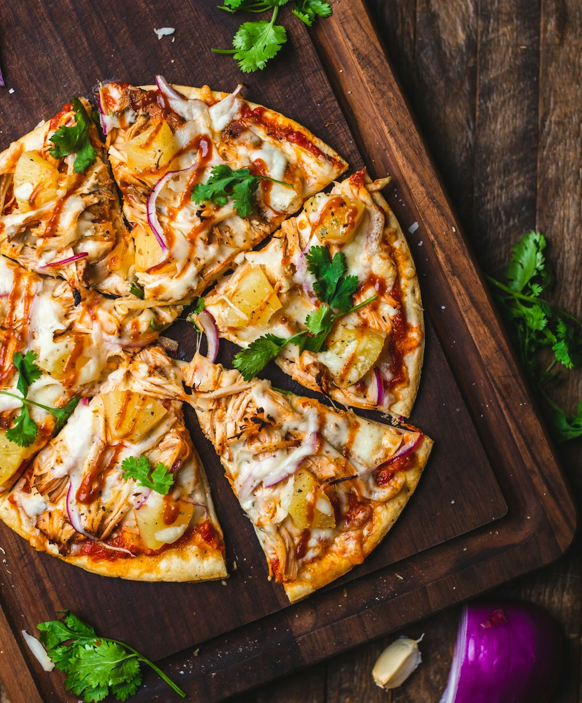

미식 탐정
모르는 음식, 함께 알아내요!

이 팬케이크 위 시럽 정체가?! 🥞
그냥 메이플 시럽이 아닌 것 같아요. 약간 시나몬 향도 나고 묵직한데...
🟢 수사 중💬 답변 8개 · 👀 조회 234 · 유력 용의자: 수제 버터 스카치 시럽

이 샐러드 토핑 다이어트 중 먹어도 될까요?
샐러드 볼에 들어간 이 하얀 조각들이 치즈인가요? 칼로리가 궁금해요!
🟠 해결됨💬 답변 15개 · 👀 조회 567 · ✅ 저지방 리코타 치즈 (1스쿱 약 50kcal)

이 화덕 피자 도우의 비결이 뭘까요?
진짜 쫄깃하고 담백해요. 일반 밀가루만 쓴 것 같지 않은데... 아시는 분?
🟢 수사 중💬 답변 3개 · 👀 조회 89 · 유력 용의자: 72시간 저온 숙성 호밀 도우